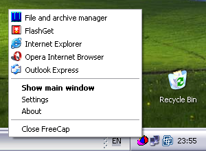

|
Die Konfiguration erfolgt in zwei Schritten: Hinzufügen einer neuen Applikation die den Proxy benutzen soll und Konfiguration der Proxy Parameter. |
| Nach der Konfiguration können Sie die Applikation über den Proxy benutzen. |
| Indem Sie sie im FreeCap Fenster doppel-klicken: |
 |
| Oder aus dem Kontextmenü auswählen. |
|  |
| Sie brauchen keine weiteren Einstellungen in Ihrer Applikation vorzunehmen, FreeCap achtet darauf daß Ihre Applikation gar nicht bemerkt daß sie über einen Proxy läuft. |